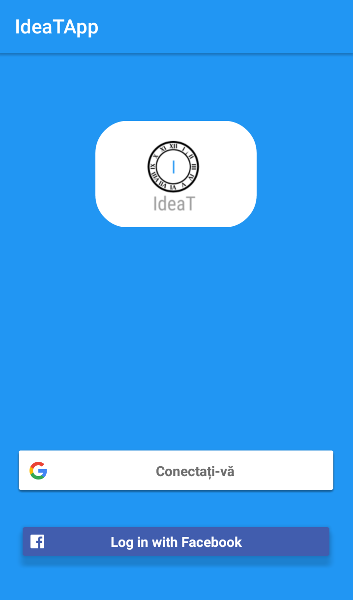
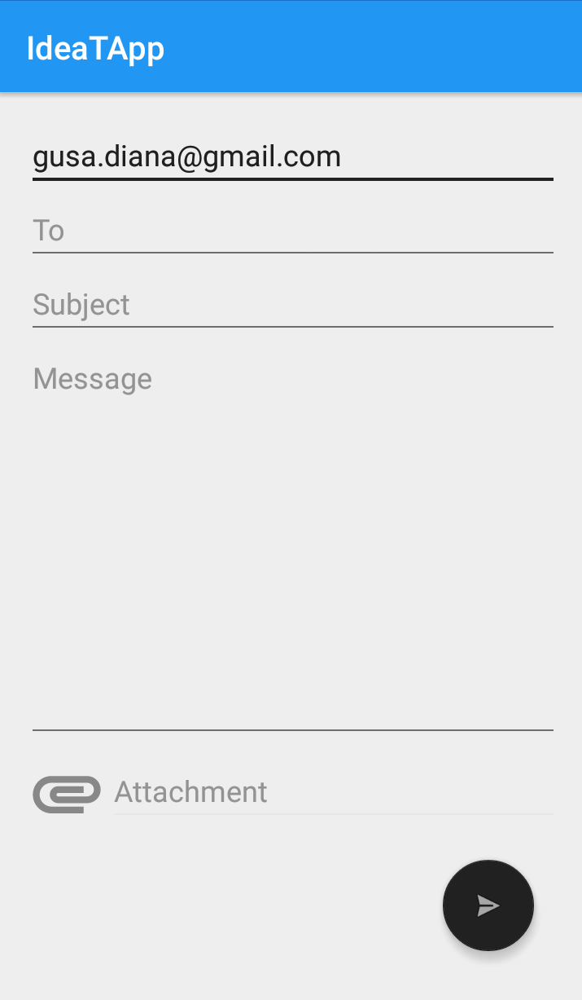
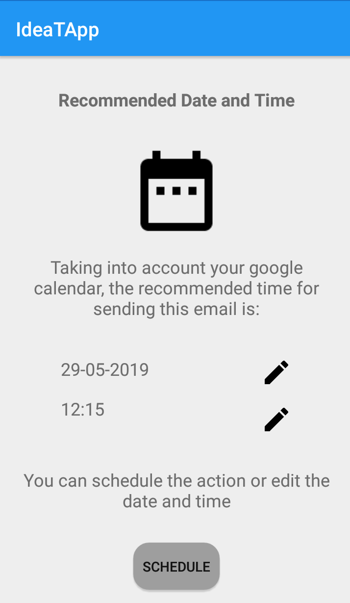

Community Draft
The current document was built as a documentation for the Ideal Timing project, which is intended for the Human-Computer Interaction university subject.
Develop a multi-device adaptive and customizable tool – i.e. a (mobile) Web browser extension – able to determine (e.g., learn) and recommend the ideal weekday and time for performing a set of desired actions in a specific context. For example, sending an important e-mail message to the co-workers, updating a Web site in order to increase the number of possible visitors and/or customers, committing the source-code only if a given module was not updated in the last W weeks, etc.
Based on the description above, we chose to build a mobile application which recommends this ideal time for some specific scenarios. These scenarios were found to be more occurent in our every day life and our scope is to help people in need in an efficient and simple manner.
A color is very important for a product's branding, being the first thing the user unconciously notices. We decided on the colors based on the Material Palette which is perfect for a mobile app because as it can be seen below, it suggests other colors which are in harmony with the primary and the accent colors chosen by us. In the study of Color Psychology, blue inspires trust, draws attention, suggests precision and stimulates productivity. These are the attributes we would like to be asocciated with, so that our users can find in IdeaT a quality, reliable and safe product. Popular technology brands such as Facebook, Twitter and Skype also use blue in their branding to make people want to use their software daily. The grey accent color associates with a timeless manner, because it is our job to help the people not be stressed by time anymore and leave that to us. Apple uses this as the main color to inspire elegance and practicability.


For Fonts, we used what Google Fonts offered us and picked Roboto Condensed as our primary font. It is widely used in mobile and especially Android applications so the user is already familiar with it and this will make it much easier to convert to our app. It allows the letters to be settled into their natural width, with some friendly and rounded features, while its geometric feel focuses on the practical side. As suggested by Google, the Condensed family can be used alongside the normal Roboto family and the Roboto Slab family.
We thought of a simple, easy-to-remember logo but which makes the user grasp the concept of the app really fast. Its focus is on timing, finding the right moment when an action should be done to get the best results. The "I" letter in the middle is similar to the hand of a clock and we wanted to use the colors and fonts mentioned above.
| User form | Fingerprint | ||
|---|---|---|---|
| Functionality | 7 | 9 | 10 |
| Efficiency | 10 | 9 | 6 |
| Ease of Implementation | 10 | 9 | 7 |
| Total | 27 | 27 | 23 |
For Login we chose the Facebook option, given the fact that our app is oriented to social media. This login approach will work for every user which already has an Facebook account. Also, the action can be done by a simple tap on a button so it will save time.
| Native date/time picker | Simple input text | Voice input | |
|---|---|---|---|
| Functionality | 10 | 9 | 8 |
| Efficiency | 9 | 8 | 10 |
| Ease of Implementation | 10 | 8 | 7 |
| Total | 29 | 25 | 25 |
For recommended date and time we were thinking that the better approach is to have the native date/time pickers because we are sure that the error rate for a date/time selected is very small. Also, the efficiency is pretty good because the user should only select a date by a simple tap. This approach is also easy to implement, because we will use the native components from Android.
| Check on Facebook feed | See the status in the app | Receive notifications | |
|---|---|---|---|
| Functionality | 10 | 9 | 8 |
| Efficiency | 7 | 9 | 10 |
| Ease of Implementation | 10 | 7 | 8 |
| Total | 27 | 25 | 26 |
It's obvious that Checking the Facebook feed is the easiest way where a user can see the status for a post. But we want to implement a part in our app to show to the user the status for a action which he made. Also, we thought that would be nice to have a system for notification which can inform the user about his action status.
Our main ideas were based on the need of a Recruiter, which has difficulty in getting responses from employees and applications for a job. As the saying goes, "timing is everything", so an application which takes care of recommending the ideal time when a job description should be sent (for example, when as many people as possible are online) would help this kind of person a lot. The user only has to login in the desired platform, insert the text and accept the time suggested by the app. He/She can also edit the date and hour if needed. The app takes care of the rest.
The second idea is focused on the images, which nowadays are more easily spread through social medias if there is activity on it, such as liking, sharing, reacting and so on. Therefore, timing also is very important in this case for advertisement. Continuing with our story, if our Recruiter decides to change the cover or profile picture, it needs to be at a favourable time when most users are online. This feature is also very useful for people who use social medias very often and also whose job depends on how many viewers or fans they have, hence the secondary persona we identified - the Influencer type.
The third idea is a frequent problem especially in our IT workplaces. A lot of emails the employees receive are not being read because of various reasons: they are away for lunch break, in a very important meeting with the customer, in a passionate discussion with their colleagues, working on some story which needs a lot of concentration and so on. Our Recruiter has the complex task of finding the right time for everyone so at least some of the receivers are in the mood of replying to the email. By automating this, he/she can focus on the work she was actually trained to do and studied for and leave the calculus in the hands of our application.
While deciding on a design for the Android application, we used mobile design patterns such as:


In order to be able to post the actions to the corresponding platforms and to have a simple and fast process, we needed to add authentication for some of the most used platforms. In the first screen of the mobile application, the user can select which of these he/she would like to use.
The first one is with Gmail, which uses the Google API for sending e-mails. The user can select which account to use, and in a fast and secure way, be redirected to the select an option step to choose "Send an e-mail". Here the Sender field is auto-completed and the next step would be to add Recipients, a Title, a Message and also Attachments such as pictures if needed.
The second platform we chose that is widely used is Facebook, where a post can be shared with friends or a picture can be uploaded. The Facebook API is quite limitated for the safety and confidentiality of their users so sadly the developers do not have much to choose from their features.
 The scheduling part was implemented using a native JobService from Android, which takes into consideration the items found in the database and checks every 20 seconds whether any of the actions are scheduled for the current date and time. This runs in the background and does not take a lot of memory, but needs internet connection. Furthermore, the APIs from Google and Facebook are used to finish the action succesfully.
For the Gmail part, we decided to have a recommendation based on user's Google Calendar after the user accepts to share their events with our application. We think that their time is very precious, so since HR people are very busy with interviews and meetings, we want to have them enjoy their breaks in between. So he/she can compose the message along with an attachment if needed and decide which candidates to have for this round of recruiting at the end of their working day. But here IdeaT comes into play and when their day is full with activities, we help make their process more efficient and send the e-mail when their calendar is busier. Taking into consideration the first events of the following day, we recommend the time of sending the e-mail, so when they come back at the end of the day, have a lot of received responses to work with.
For the future, after we have gathered some data about the time most responses are received, we would like to recommend a better time for the job e-mail so the recruiter catches those users already online in their e-mail application.
For the Facebook part, we wanted to have some statistics along a couple of days to determine the day of the week and time of the day when there are most users active. The next step is to have the closest period with regards to the current time the user is composing the post message or choosing the picture to share and have this recommended to him/her, but also present the other times when there are more users, but he/she will have to wait a bit more for that. Therefore, the choice can still be the user's which would fit him/her best.
It is important for our user to remember their past actions and also see the current status of the tasks that were scheduled in a simple way. Furthermore, we needed to store the timestamps and the content to have them at hand when it was time to send them. So we used a SQLite database where we stored an Item Model, with the message, pictures, source, time to schedule, recipients and status. We have a list of items in the History Tab from the main screen with the most important details and also descriptive images for the source (logo of the platforms) and the status (PENDING is represented by an hourglass, while SENT displays two checkmarks).
The interaction between the user and the application is most important, so we need to guide the user into learning the ways of IdeaT. We have dialogs which are displayed when he/she wants to do an action without being logged in with that platform and also a button which automatically switches to the Login screen. There are also error messages appearing as a Snackbar native component when some fields are left blank or the validations do not pass.
We also value real-time changes and we show that through local broadcasting of notifications so the History list will be updated automatically when the action is done. Furthermore, a system notification appears in the toolbar of the phone when the Scheduler decides it's time to complete the task. For devices with an operating system newer or equal to Android Oreo, we also have Notification Channels so the user can have complete control whether to have these alerts displayed or they do not want to be disturbed.